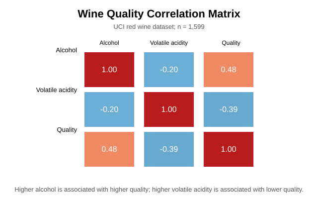
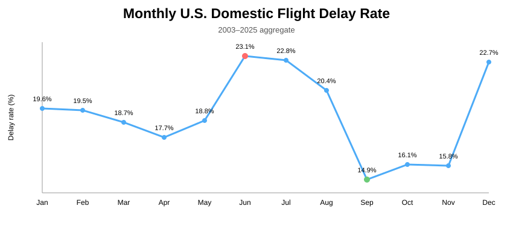
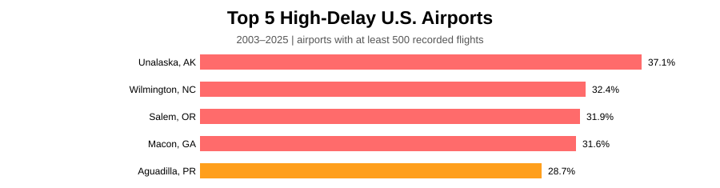
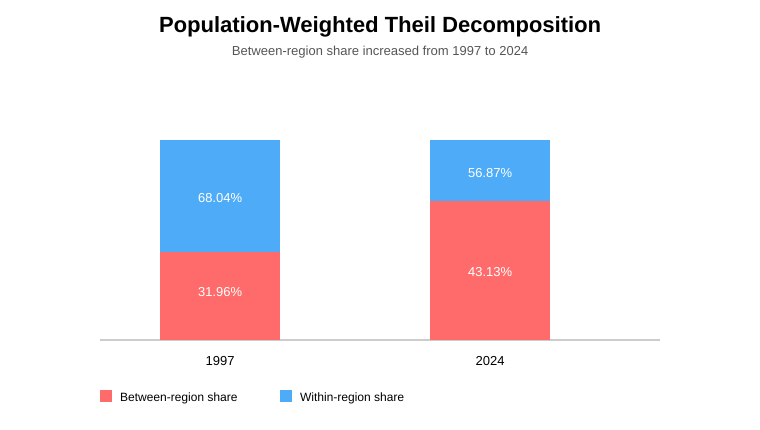
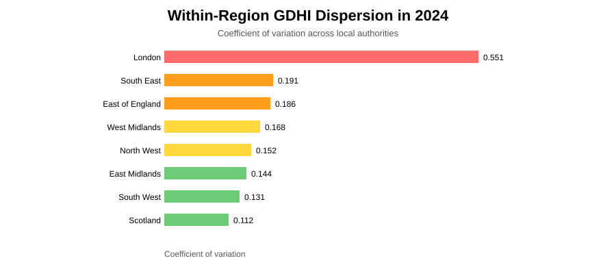

About me
I am developing practical skills in Python data analysis, reproducible research, visualization, and technical communication. This portfolio separates my individual project from two group assignments so the work context is clear.
Technical skills
- Python, pandas, NumPy, and Jupyter workflows
- Data cleaning, aggregation, and exploratory analysis
- Matplotlib and Seaborn visualization
- Git, GitHub, GitHub Pages, and documentation
Portfolio structure
Individual Wine Quality Analysis
Group 01 U.S. Domestic Flight Delay Pattern Analysis
Group 02 Income Inequality Across UK Local Authorities
Individual work
Wine Quality Analysis
Which physicochemical properties most influence red wine quality?

Findings: Alcohol is positively correlated with quality at approximately 0.48, while volatile acidity is negatively correlated at approximately -0.39.
Limitation: The sample covers Portuguese Vinho Verde red wine and uses subjective expert quality scores.
View project folder · Status: Completed
Group Assignment 01
U.S. Domestic Flight Delay Pattern Analysis
What drives U.S. domestic flight delays?
Findings: Overall delay rate is about 19.2%. Aloha Airlines is most punctual at 7.1%, while June is the worst month at 23.1% and September is best at 14.9%.
Limitation: Monthly aggregated records show patterns but cannot prove passenger-level causality.
Flight delay visualizations


Group Assignment 02
Income Inequality Across UK Local Authorities
Is local-authority GDHI converging or diverging?
Findings: Equal-weighted CV declines from 0.4497 to 0.3551, but population-weighted Theil rises from 0.0278 to 0.0388.
Limitation: Aggregate GDHI does not measure individual household income.
Income inequality visualizations

